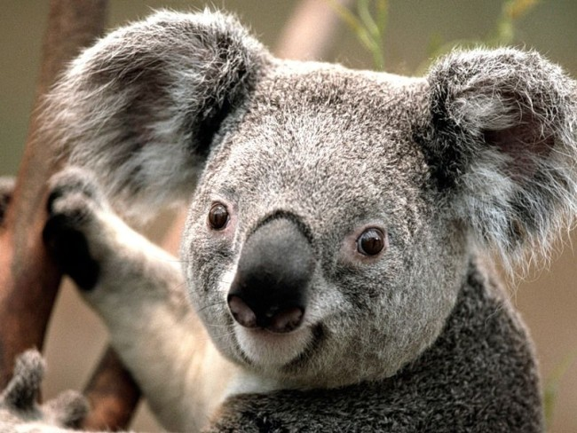
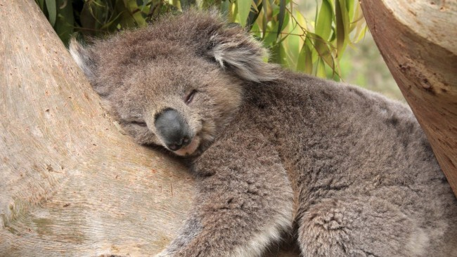
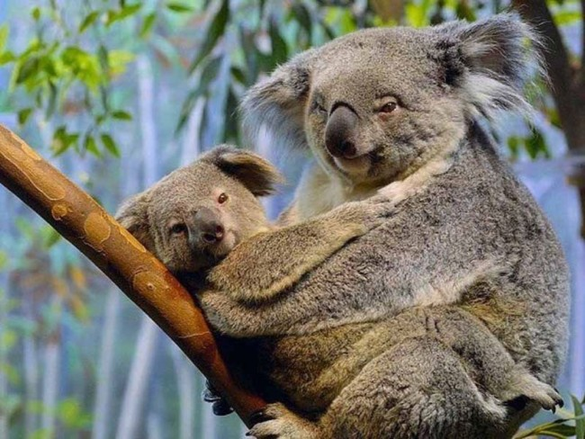

Коала
Коала ― сумчатое травоядное животное. Обитает на юге и востоке Австралии, а также в некоторых других местах, где достаточно влаги и растут эвкалипты. Как и многие другие обитатели Австралии, коала сумчатое млекопитающее. Первый раз его описали в 1798 году,
когда он был найден в Голубых горах (Австралия). Коалы произошли от своих ближайших родственников вомбатов. Они похожи на них, но отличаются более мягким и густым мехом, уши их чуть крупнее,
конечности более длинные.
Коалы питаются только корой и листьями эвкалипта и почти не пьют воду, так как листья эвкалипта содержат более 90 % необходимой для них жидкости. Животные пьют воду только тогда,
когда им не хватает влаги в листьях или они больны.

Острые когти зверя помогают ему легко передвигаться по стволам деревьев, форма и размер конечностей также способствуют этому.
На кистях передних лап имеется два больших пальца, которые отставлены в сторону, рядом с ними расположены еще по три пальца.
Коала, обхватив ветвь, спит на дереве, при этом она может удерживаться даже одной лапой.
Коала почти неподвижна 18─20 часов в сутки. Она прыгает с дерева на дерево в основном, чтобы найти пропитание или убежать от опасности.
Ещё одна уникальная способность этого зверька, то, что он умеет плавать. Коалы довольно медлительны, это связано с особенностями их питания,
так как листья содержат мало белка. К тому же у коал низкий обмен веществ, он в 2 раза медленнее, чем у других млекопитающих.
Иногда, чтобы восполнить потребность в микроэлементах, коалы едят землю.
Период размножения у коал ― с октября по февраль.
В эту пору они собираются в группы, которые состоят из нескольких самок и одного взрослого самца. В остальное же время каждая самка обитает
на своей территории, ведет одиночный образ жизни.
Коалы довольно тихие животные. Громкие крики можно услышать только во время брачного периода.

Беременность у коал протекает в течение 30─35 дней. Чаще всего рождается лишь один детеныш, который весит 5,5 грамм и имеет рост 15─18 миллиметров.
Малыш находится в сумке матери полгода, это время он питается ее молоком.
В течение последующих шести месяцев он выбирается из сумки и цепко держится за мех матери.Через месяц детёныши становятся самостоятельными, но еще до 2─3 лет находятся с матерью.
Размножение происходит у них раз в 1 или 2 года. Продолжительность жизни 11─12 лет, хотя могут быть и исключения,
известны случаи, когда коалы жили и 20 лет.
В дикой природе сумчатое животное не имеет врагов, скорее всего, потому, что его мясо пахнет эвкалиптом.
Коала бывает похожей на ребенка: когда зверь остается в одиночестве, он может плакать и тосковать.
В дикой природе засуха, пожары, браконьеры губят этих трогательных зверьков. Вырубка эвкалиптовых деревьев также способствует их истреблению.